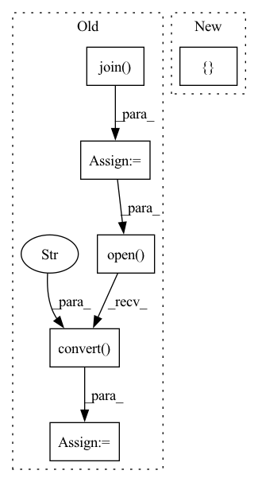

Pattern ID :29823

Before Change
total_files = len(file_names)
for index in range(total_files):
lr_image_path = os.path.join(config.lr_dir, file_names[index])
sr_image_path = os.path.join(config.sr_dir, file_names[index])
hr_image_path = os.path.join(config.hr_dir, file_names[index])
print(f"Processing `{os.path.abspath(hr_image_path)}`...")
// Make low-resolution images.
lr_image = Image.open(lr_image_path).convert("RGB")
hr_image = Image.open(hr_image_path).convert("RGB")
bic_image = lr_image.resize([hr_image.width, hr_image.height], Image.BICUBIC)
// Extract Y channel lr image data.
lr_image = np.array(lr_image).astype(np.float32)
lr_ycbcr = imgproc.convert_rgb_to_ycbcr(lr_image)
lr_image_y = lr_ycbcr[..., 0]
lr_image_y /= 255.
lr_tensor_y = torch.from_numpy(lr_image_y).to(config.device).unsqueeze(0).unsqueeze(0)
lr_tensor_y = lr_tensor_y.half()
After Change
hr_image = Image.open(hr_image_path).convert("RGB")
hr_image_width = hr_image.width // config.upscale_factor * config.upscale_factor
hr_image_height = hr_image.height // config.upscale_factor * config.upscale_factor
hr_image = hr_image.resize([hr_image_width, hr_image_height], Image.BICUBIC)
lr_image = hr_image.resize([hr_image.width // config.upscale_factor, hr_image.height // config.upscale_factor], Image.BICUBIC)
bic_image = lr_image.resize([hr_image.width, hr_image.height], Image.BICUBIC)
In pattern: SUPERPATTERN
Frequency: 3
Non-data size: 6
Instances
Fragment ID: 88325090
Project Name: lornatang/fsrcnn-pytorch
Commit Name: 5a0ecdd432cc264e98e446689348e5565a84ac1f
Time: 2021-11-19
Author: liuchangyu1111@gmail.com
File Name: validate.py
M Class Name: AnonimousClass
N Class Name: AnonimousClass
M Method Name: main(0)
N Method Name: main(0)
M Parent Class:
N Parent Class:
M File Name: validate.py
N File Name: validate.py
M Start Line: 53
M End Line: 95
N Start Line: 63
N End Line: 98
'>
Before Change
self.root_dir,
image_path
)
mask_path = os.path.join(
self.root_dir,
mask_path
)
image = Image.open(image_path)
image = np.array(image)
mask = Image.open(mask_path).convert("L")
mask = np.array(mask)
mask = (mask > 0).astype(np.uint8)
result = {
"image": image,
After Change
image = self.load_image(idx)
mask = self.load_image(idx, key="label_path")
result = {
"image": image,
"mask": mask
} if self.transform is None else self.transform(
image=image,
mask=mask
)
'>
Fragment ID: 88325062
Project Name: dsgoficial/pytorch_segmentation_models_trainer
Commit Name: 7dc50a19af4bb1227ff275e92b7ea50b6c1e7b4d
Time: 2021-03-10
Author: philipeborba@gmail.com
File Name: pytorch_segmentation_models_trainer/dataset_loader/dataset.py
M Class Name: SegmentationDataset
N Class Name: SegmentationDataset
M Method Name: __getitem__(2)
N Method Name: __getitem__(2)
M Parent Class: Dataset
N Parent Class: Dataset
M File Name: pytorch_segmentation_models_trainer/dataset_loader/dataset.py
N File Name: pytorch_segmentation_models_trainer/dataset_loader/dataset.py
M Start Line: 67
M End Line: 101
N Start Line: 67
N End Line: 77
'>
Before Change
total_files = len(file_names)
for index in range(total_files):
lr_image_path = os.path.join(config.lr_dir, file_names[index])
sr_image_path = os.path.join(config.sr_dir, file_names[index])
hr_image_path = os.path.join(config.hr_dir, file_names[index])
print(f"Processing `{os.path.abspath(hr_image_path)}`...")
// Make low-resolution images.
lr_image = Image.open(lr_image_path).convert("RGB")
hr_image = Image.open(hr_image_path).convert("RGB")
bic_image = lr_image.resize([hr_image.width, hr_image.height], Image.BICUBIC)
// Extract Y channel lr image data.
lr_image = np.array(lr_image).astype(np.float32)
lr_ycbcr = imgproc.convert_rgb_to_ycbcr(lr_image)
lr_image_y = lr_ycbcr[..., 0]
lr_image_y /= 255.
After Change
image_height = (image.height // config.upscale_factor) * config.upscale_factor
image = image.resize([image_width, image_height], Image.BICUBIC)
image = image.resize([image.width // config.upscale_factor, image.height // config.upscale_factor], Image.BICUBIC)
image = image.resize([image.width * config.upscale_factor, image.height * config.upscale_factor], Image.BICUBIC)
// Extract Y channel image data.
lr_image = np.array(image).astype(np.float32)
lr_ycbcr = imgproc.convert_rgb_to_ycbcr(lr_image)
'>
Fragment ID: 88325039
Project Name: lornatang/vdsr-pytorch
Commit Name: a74f59d38f5d880febe1040548b5865af385e8db
Time: 2021-11-17
Author: liuchangyu1111@gmail.com
File Name: validate.py
M Class Name: AnonimousClass
N Class Name: AnonimousClass
M Method Name: main(0)
N Method Name: main(0)
M Parent Class:
N Parent Class:
M File Name: validate.py
N File Name: validate.py
M Start Line: 53
M End Line: 96
N Start Line: 63
N End Line: 84